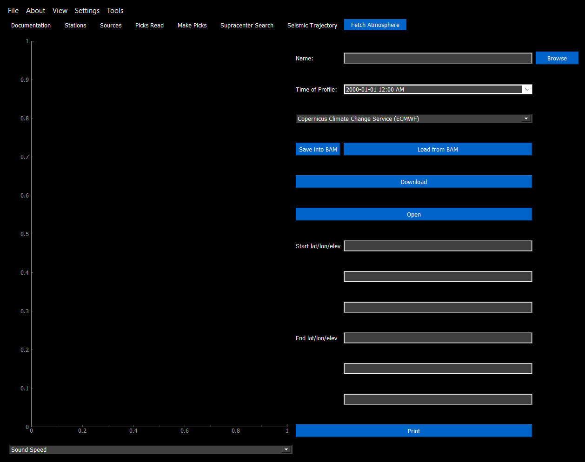

Atmosphere
Effect of Weather on Rays
The temperature changes the speed of sound in air like so:
And a wind vector creates an effective sound speed of:
Where the values of the constants are:
Ideal gas constant \(R = 8.31432\) J/K mol
Heat capacity ratio \(\gamma = 1.40\)
Molar mass of the air \(M_0 = 0.0289644\) kg/mol
Setting Up Atmospheric Fetching
Note
Weather data has been tested with recent files, older files may have a different format, in which a custom script to read them is required.
ERA5
Setting up atmospheric fetching is a one-time setup which will allow data to be downloaded from the Copernicus Climate Change Store automatically.
Follow the instructions given here, with the given exceptions below: https://cds.climate.copernicus.eu/api-how-to
Step 1: Needs to be done locally, since the url and key depend on the users login
Step 2: Proceed as normal
Step 3: Does not need to be done, the Fetch Atmosphere tab does this for you, and will request the data, and display it automatically.
Warning
Cancelling the program while it is using the weather data may corrupt it! Since these files are so large to download (usually between 1 and 6 GB), it is recommended to keep a copy of the weather file on your computer, just in case!
Isotropic Atmospheric Data
No file is required for an isotropic profile.
The speed_of_sound variable must be set, and the program will make a custom atmospheric dataset using the given speed of sound.
Perturbations
The atmospheric data has some uncertainty. To capture this uncertainty in our analysis, we add Monte-Carlo perturbations to the nominal atmospheric profile. The ERA5 model provides the standard deviation of the raw weather data, namely the temperature and the u- and v-components of the winds. A perturbation generates a random value for every data point in the atmosphere fit on a Gaussian curve using the nominal atmosphere as a mean and the ensemble spread provided by ERA5 as the standard deviation.
The number of perturbations run in a simulation can be configured in the preferences menu. Note that since the perturbations deal with random numbers, the results between runs may be different.
Loading Data into an Event
Data may be loaded into an event .bam file by selecting the Fetch Atmosphere tab. To automatically download an atmosphere or perturbation file, click Download. The GUI will ask for the download location, and if you would like to download the nominal data or perturbations only. Alternatively, the files may be downloaded from the Copernicus site directly: https://cds.climate.copernicus.eu/cdsapp#!/dataset/reanalysis-era5-pressure-levels
To save a file, indicate the file in the name field, and indicate what file type it is (nominal or spread). Then click save into BAM, which will load a subsection of the data into the BAM file which is within the search radius. Once the atmospheric file is saved into BAM, the atmospheric file is no longer needed, and can be deleted (although it is recommended to keep it on your computer - the files may become corrupted if the program is cancelled at the wrong time).
A complete atmospheric model will be added like this: The user clicks download, and opts NOT to download perturbations. A .nc file will be downloaded to the computer. The user clicks download again and opts to download perturbations. A second .nc file (with a different name) will be downloaded to the computer. This downloads the weather data to the computer, but does not implement it into the current event. If you already have atmospheric data, the data does not need to be downloaded. To implement the atmospheric data into the event, select the nominal atmospheric file in the Name field by selecting Browse. Make sure the combo box says “Copernicus Climate Change Service (ECMWF)” and does NOT say “Spread”, and click Save to BAM. This imports a subset of the weather data into the .bam file for future analysis. Repeat this for the perturbation file, but this time making sure the combo box says “Copernicus Climate Change Service (ECMWF) - Spread”.
To check if the weather data has been correctly implemented, select Load from BAM to load the current weather model that the event is using. Make sure that the start and end heights have been selected. The plot on the left should now show the atmospheric profile defined from the start and end positions given with the number of perturbations indicated in preferences.
Here is a summary of what every button on this page does:
Save into BAM - Saves a subset of the weather profile given in the Name field into the .bam file
Load from BAM - Loads the current weather program that is saved in the .bam file (note that the Name field may be blank here)
Download - Opens up a GUI to download from the Copernicus Climate Change Service
Print - Does the same as Load from BAM, but outputs a text file instead of a plot